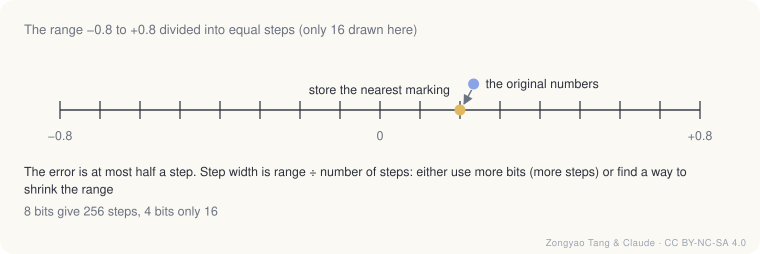
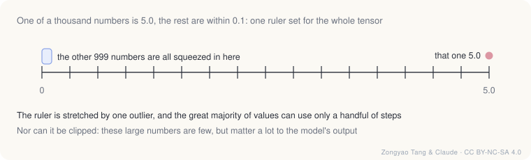

The thread: quantisation represents each number in fewer bits, so first see how it is done and where the error comes from → why it works in inference, and what exactly it saves → weights are easy to quantise, activations hard, because of a few especially large numbers. While reading, keep 4.1's conclusion in mind: in token-by-token generation, the bottleneck is "reading the weights out of GPU memory". Quantisation is the most direct answer to this bottleneck.
Part 9 · Inference systems (optional)9.2 Quantisation and low precision
Translated by AI (Anthropic's Claude) from the Chinese edition. The Chinese original is the reference.
This unit answersRepresenting numbers in fewer bits: what exactly does it save, and what does it lose?
Follows 4.1: token-by-token generation is limited by memory bandwidth, and quantisation is the most direct remedy.
- Quantisation is switching to a ruler with coarser markings
- In inference, what quantisation mainly saves is bandwidth, not compute
- Activations contain "giants", so they are harder to quantise than weights
Explanation
1Quantisation is switching to a ruler with coarser markings
Map a range of floating-point numbers onto 256 (int8) or 16 (int4) integers: a scale factor decides how much each step stands for, and a zero point shifts it when needed. The error is proportional to the width of each step.
The basic method. You have a set of floating-point numbers (say a weight matrix) and want to store them as 8-bit integers, that is, with only 256 possible values.
- Find the range of the numbers, say from −0.8 to +0.8.
- Divide this range evenly into 255 steps. The width of each step is called the scale factor, here about 0.0063.
- Divide each floating-point number by the scale factor, round to the nearest integer, and store that integer.
- When using it, multiply the integer by the scale factor to get an approximation of the original number.
What is stored is a pile of 8-bit integers, plus one scale factor.

Each number is moved to the marking nearest it Where the error comes from. Rounding. Each number is off by at most half a step. So the size of the error is proportional to the width of a step, and the width of a step = range ÷ number of steps. There are two ways to reduce the error:
- More steps: use more bits. From 4 bits (16 steps) to 8 bits (256 steps), the error is 16 times smaller. But bits are exactly what we want to save.
- Shrink the range: this is where quantisation techniques really put their effort.
The range is stretched by extreme values. Suppose that of a thousand numbers, nine hundred and ninety-nine lie between −0.1 and 0.1, and only one is 5.0. With the range set by the whole set, the ruler has to measure from −5 to 5, each step 0.04 wide. Those nine hundred and ninety-nine numbers are all squeezed into the five or six steps in the middle, almost impossible to tell apart. One extreme value ruins the precision of all the others.
Groups: each group with its own ruler. Instead of using one scale factor for the whole matrix, divide it into small groups, each with a scale factor set by its own range:
- By channel (one for each row or column of the matrix).
- By smaller groups (one per 64 or 128 numbers).
That 5.0 then affects only the group it is in, and every other group has a fine ruler. The cost is storing more scale factors: one 16-bit scale factor for every 128 4-bit numbers adds about 0.125 bits per number on average, very much worth it.
The zero point. If the range of the numbers is not symmetric (say activations after ReLU, which are all non-negative), centring the ruler on 0 wastes half the steps. Store one more offset (the zero point), so that the ruler covers exactly the actual range. Weights are usually roughly symmetric and generally do not need it.
Smarter rounding. The simplest quantisation rounds each weight independently. But what we really care about is not each weight's error but the error of the layer's output. Methods such as GPTQ and AWQ calibrate with a small amount of real input data: when rounding one weight, they consider its effect on the output, and adjust the other weights to compensate. This keeps model quality good even with 4-bit or 3-bit quantisation. They do not change the basic principle of the "ruler"; what they improve is "which way to round".
An analogyMeasuring things with a ruler that has only 256 markings: the larger the range you set, the coarser each step.
So the key to quantisation is choosing the range well: do not let a few extreme values stretch it. Per-channel and per-group (one group per 64 or 128 numbers) give each group its own ruler, with far smaller error.
Used later in In inference, what quantisation mainly saves is bandwidth, not computeActivations contain "giants", so they are harder to quantise than weightsSourcesCUDA for LLMs chapter 9: scale factors and errorCUDA for LLMs chapter 9: the zero pointCUDA for LLMs chapter 9: group quantisationGPTQ paperAWQ paper- Quantisation makes the model smaller. In inference, the speed-up from "smaller" is more direct than intuition suggests.
2In inference, what quantisation mainly saves is bandwidth, not compute
Token-by-token generation is limited by memory bandwidth (4.1). Drop the weights from 16 bits to 4, and the bytes to move become a quarter; the kernel dequantises in registers as it reads, and the little extra computation takes almost no time.
Back to 4.1's estimate. The ceiling on a single request's decode speed ≈ memory bandwidth ÷ bytes of model weights. For each token generated, all the weights are read once from GPU memory.
Quantise the weights from 16 bits to 4, and the bytes become a quarter, so this ceiling becomes four times higher. A 7B model drops from 14 GB to about 3.5 GB, and on a 1 TB/s GPU the theoretical ceiling rises from 70 tokens a second to 280.
Does dequantising take time. What is stored is 4-bit integers, and for computing they have to become floating point again (multiplied by the scale factor). This step happens inside the kernel: threads read the packed integers from GPU memory, unpack them in registers, multiply by the scale factor, and go straight on to the matrix-vector computation.
This little extra computation is done in registers, without touching GPU memory. And decode is bandwidth-limited, with the arithmetic units sitting idle anyway (4.1). So the extra computation takes almost no time. This is the pattern from 4.2: for bandwidth-limited operations, computing a little more to move a little less is worth it.
The benefit for memory. With weights taking less room, the memory freed can go to the KV cache, so the same GPU holds more concurrent requests (9.1). On devices without much memory (personal computers, phones), quantisation is often the precondition for "can it run at all".
When it does not help much.
- Large-batch serving. As 9.1 said, once the batch is large the bottleneck moves from bandwidth to compute. Then each step's time is mainly computation, reading the weights is only a small part, and making the weights smaller brings little speed gain (the memory benefit remains). To speed up in the compute-limited range, what is needed is for the matrix multiplication itself to be computed at lower precision (below).
- Prefill. Likewise, prefill is compute-limited.
Two different kinds of "low precision".
Weights only (e.g. W4A16) Weights and activations (e.g. W8A8) Storage Weights in 4 bits Weights and activations in 8 bits Computation Dequantised to 16-bit floating point, then computed Matrix multiplication done directly in 8-bit integers or 8-bit floating point Saves Bandwidth, memory Bandwidth, memory, and compute too Best for Decode for a single user or small batches Large batches, compute-limited situations Difficulty Low High (next card) The second lets Tensor Cores do more multiply-adds in the same time (4.5 said they support 8-bit inputs), so it works for compute-limited situations too. But it requires the activations to be quantised as well, which is much harder than quantising weights.
The way to judge is the same as ever. First ask what the bottleneck is waiting for. Waiting for memory bandwidth: quantising only the weights works, and is simple. Waiting on compute: quantisation has to reach the computation itself. The four waits of 0.1, used once again.
An analogyLike compressing and packing goods: transport gets much faster, and unpacking takes a little more effort.
So quantising only the weights (W4A16) gives the most obvious speed-up for single-user generation; for large batches and compute-limited situations, the gain has to come from int8 or fp8 matrix multiplication itself being faster.
Builds on When generating one word, matrix multiplication degenerates into matrix times vectorQuantisation is switching to a ruler with coarser markingsFusion in training: what about fused-away intermediate results the backward pass needs"Slow" on the pipeline comes in only four kinds: waiting for data, on compute, for orders, for the other GPUsSourcesCUDA for LLMs chapter 9: the gain comes from moving fewer bytes- The table in the previous card said "quantising both weights and activations" is hard. The difficulty is in the activations.
3Activations contain "giants", so they are harder to quantise than weights
In a large model's activations, a few channels have values dozens of times larger than the others. When one range is chosen for the whole tensor, these few outliers stretch the ruler very coarse, and the great majority of the other values cannot be measured accurately.
Three differences between weights and activations.
- Weights are fixed, activations differ every time. Weights do not change once training is done, so their distribution can be analysed at leisure and the best quantisation chosen offline. Activations depend on the input, so the quantisation parameters must suit every possible future input.
- The distribution of weights is fairly regular, activations have extreme outliers. Weights are mostly concentrated around zero. In a large model's activations, though, a few fixed channels (certain positions in the hidden dimension) can have values tens or hundreds of times larger than the rest.
- How errors propagate. Quantisation errors in activations flow straight into the next layer, accumulating layer by layer.
Why outliers are fatal. This is exactly the example in the first card of this unit: of a thousand numbers, one is 5.0, and the rest are all within 0.1. With one ruler set for the whole tensor, the great majority of values can use only a handful of steps. And the few large numbers cannot simply be clipped: research has found that few as they are, they matter a lot to the model's output, and clipping them clearly harms quality.

One outlier takes up almost the whole ruler For weights, group quantisation solves this problem: an outlier affects only its own small group. For activations, grouping is not so easy:
- Grouping by token (one ruler per position): feasible and effective, because different positions have different ranges of values.
- Grouping by channel (one ruler per hidden dimension): works best, because the outliers are concentrated in particular channels. But it is incompatible with efficient integer matrix multiplication: matrix multiplication multiplies the numbers of each channel in a row and adds them up, and if each channel has a different scale factor, this cannot be done directly on integers.
Some remedies.
- Shift the difficulty onto the weights. SmoothQuant's idea: a layer's computation is "activations × weights". Divide one channel of the activations by a factor, and at the same time multiply the corresponding column of the weights by the same factor, and the product is unchanged. Choose suitable factors, and the outlier channels in the activations are pressed down while the weights grow somewhat larger in return. Weights are easy to quantise in the first place, and can take it. So both sides become easy to quantise.
- Handle the outlying part separately. The great majority of values use low precision, while the few outlier channels or elements keep high precision, computed separately and then combined.
- Quantise while training. Simulate the effect of quantisation during training or fine-tuning, so the model adapts by itself. The best results, and the highest cost.
The choices in practice.
- Running a model on a personal device: quantise only the weights, to about 4 bits. Simple, stable, and exactly matched to the bandwidth bottleneck of single-user decode. This is the mainstream approach behind the various "quantised models" you download.
- Large-scale serving: whether to quantise activations depends on the trade-off between compute cost and quality requirements. Newer GPUs support 8-bit floating point (fp8), which tolerates differences in range better than 8-bit integers, making this somewhat easier.
- The KV cache is activations too. Quantising it directly increases concurrency (9.1), and has to face the same problems above.
Low precision in training is a different matter. This unit is about quantisation after training. The bf16 mixed precision of training (1.5, 2.6) has many more bits and keeps a 32-bit master copy, so it has none of these difficulties. Training at 8 bits or even lower precision is a direction still being explored.
An analogyThe whole class is between 1.5 and 1.9 metres tall, and suddenly a three-metre giant arrives: once the ruler's range is stretched, nobody else can be measured accurately.
So schemes that also quantise activations (such as W8A8) all have to deal specially with outliers: quantising by token or by channel, keeping outlier channels in high precision separately, or shifting the difficulty onto the weights. Quantising only the weights is much simpler, which is why it is the most common practice for local deployment.
SourcesCUDA for LLMs chapter 9: the problem of outliersCUDA for LLMs chapter 9: a worked exampleSmoothQuant paper
Putting it together
Quantisation maps floating-point numbers onto a few integers; the key is choosing the range well, and giving each group its own "ruler" makes the error smaller. In inference, what it mainly saves is bandwidth: with fewer bytes of weights, less data has to be moved for each token generated. Activations contain a few especially large numbers, which make them much harder to quantise than weights, so the most common practice is to quantise only the weights.
Test yourself
Without looking back at the explanation, say it in your own words.
- How does quantisation turn floating-point numbers into integers? What does the scale factor do? Why is the error of group quantisation smaller?
- Why does quantisation make token-by-token generation faster? In what situations does it not help much?
- Why are activations harder to quantise than weights? What ways are there of dealing with outliers?